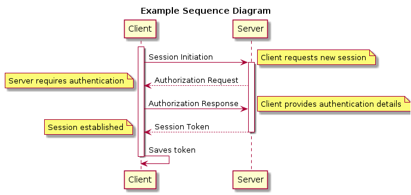
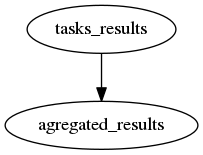

Org-mode - a.k.a. your ultimate organizer (basics of basics)
1 Intro
1.1 DONE Adapt text size for better readibility :)
All this things and many many more are in official org-mode manual (http://orgmode.org/manual/index.html#Top)
(text-scale-increase -1) (text-scale-increase 1)
1.1.1 Tip
In emacs C-x C-e executes elisp code
e.g.
(message "aaaaaaaaaaaaaa!!!!!!!!") (find-file (concat "etc/nginx" "nginx.conf"))
1.2 WTF is emacs?
GNU Emacs is an extensible, customizable text editor—and more.
1.3 WTF is orgmode?
Org-mode is:
Outline-based notes management and organizer, alias "Carsten's outline-mode for keeping track of everything."
everything is keyword here!
For most devz it could be compared to markdown on steroids (a LOT of steroids)
Why?
Because it's most powerfull tag-less (plain text based) format
Org's syntax is similar to markdown or textile or wiki.
2 Customization
M-x customize-group- (customize-group "org")
3 How to get help
There are several ways for getting help in Emacs:
- RTFM:
a) web http://orgmode.org/manual/index.html#Top
b) or in emacs:
C-h r(and then searchC-sOrg Mode) - For key shortcuts and description of any emacs mode:
C-h m(help mode, there is also help key, help function and help helpC-h C-h) - This little
Orgmode menu on bottom C-h mHelp about mode in which you are (org-mode in this filem)
4 Document structure
ORG is OUTLINE based - its structure is like a tree
4.1 tree levels are defined by "*" character
* Its first level header Some content ** Its subheader And content *** Sub sub header
4.2 You can "walk" in different directions
C-c C-n- next tree elementC-c C-u- goto parent element
Some basics are in this screencast: http://vimeo.com/15269391
5 Basic Text formatting
This is *bold* /italics/ _underline_
Gives us output: This is bold italics underline
6 Tags
You can use tags on each entry, press C-c C-q to add/change existing tags-tree
6.1 Entry 1 db
6.2 Entry 2 web
6.3 Entry 3 queues db
7 PUT some CODE inside
we can add source code block in #begin_src tag
echo $_POST['something'];
8 RUN!! some CODE inside your documentation
ls -lah
8.1 PRO TIP
it could be configured to run on export, e.g. to HTML or PDF :) Do you feel the POWER?
9 TABLES handling in org
9.1 Basics
start writing |-- and You'll get new table
9.2 Simple sum :)
| some | thing | 2 thing |
|---|---|---|
| title | 10 | |
| 20 | ||
| 30 | ||
| 41 |
For some additional feature look at bottom menu: Org => Tbl
9.3 You can make tables from simple strings
this will be nice table 1 2 3 3 33 and it should fit in columns trolololo
Press C-c | on selection and You'll receive
| this | will | be | nice | table | | 1 | 2 | 3 | 3 | 33 | | and | it | should | fit | in | | columns | trolololo | | | |
11 UML diagrams drawing
11.1 setup
first you'll need to set jars location for our drawing programs
(setq workdir (file-name-directory (or load-file-name buffer-file-name))) (setq org-plantuml-jar-path (expand-file-name "plantuml.jar" workdir)) (setq org-ditaa-jar-path (expand-file-name "ditaa.jar" workdir))
11.2 draw

12 Graphs drawing
Draw them with text (use dot language for it) details about DOT http://www.graphviz.org/pdf/dotguide.pdf

13 exporting to other formats
All files default generates file with exported extension in almost all cases
if you replace last letter with o it will be replaced.
13.1 markdown
C-c C-e m m
13.2 html
C-c C-e h h
13.3 pdf
C-c C-e l p
13.4 odt
C-c C-e o o
13.5 mindmaps
C-c C-e f f
it looks like recent version of org breaks this functionality (8.2.3c) but it worked in pre 8.2 versions :) We need to wait until someone repair this
14 Agenda
You can add files to org-agenda its a list of TODO entries which can be filtered by tags, statuses etc, we can make some actions on it.
You can add files to agenda in your config file
(setq org-agenda-files
(quote (
"~/org/wiki/presentation.org"
"~/org/wiki/temporary.org"
)))
or mange them by pressing
C-c [- (org-agenda-file-to-front)C-c ]- (org-remove-file)
You can view M-x org-agenda - org agenda todo
We define agenda and TODOs key shortcuts
(global-set-key (kbd "C-c a a") 'org-agenda) (global-set-key (kbd "C-c a t") (lambda () (interactive) (org-todo-list 1) ))
qkey quit agenda or todo view (like any other mode where speed keys are used)
You can define custom agenda commands (it's from some tutorial)
(setq org-agenda-custom-commands
'(("x" agenda)
("y" agenda*)
("u" tags "+boss-urgent")
("v" tags-todo "+boss-urgent")
("U" tags-tree "+boss-urgent")
("f" occur-tree "\\<FIXME\\>")
("h" . "HOME+Name tags searches") ; description for "h" prefix
("hl" tags "+home+Lisa")
("hp" tags "+home+Peter")
("hk" tags "+home+Kim")))
more in: http://orgmode.org/manual/Built_002din-agenda-views.html#Built_002din-agenda-views
15 Capturing notes
15.1 Org capture templates
C-c c- defined in config file - runs org-capture function
(define-key global-map "\C-cc" 'org-capture)
(setq org-capture-templates
'(
("p" "Presentation" entry (file+olp "~/org/wiki/temporary.org" "Root level heading")
"* TODO %?\n %i\n %a")
))
16 Hyperlinks
C-c C-l- creates hyperlink with description and link to whatever you want (even some kind of position in file e.g. some PHP file - look fororg-capture)
17 TODOs and checkboxes
you can add checkboxes and TODOs
17.1 Checkboxes
You can use C-c C-c to toggle (M-S-RET to create new below)
[ ]Some[X]checked checkbox
Remember that: Parent item could count his children!
17.2 You can use todo list (in header lines)
17.2.2 Simple checkbox list
[ ]one[ ]two[X]three
add progress :)
17.3 States
(setq org-todo-keywords
'((sequence "TODO" "STARTED" "TESTING" "|" "COMPLETED")
(sequence "FUTURE" "|" "SUSPENDED")))
(setq org-todo-keyword-faces
'(
("FUTURE" . (:foreground "lightblue" :weight bold))
("STARTED" . (:foreground "orange" :weight bold))
("SUSPENDED" . (:foreground "light gray" :weight bold))
("TESTING" . (:foreground "light salmon" :weight bold))
))
or in header:
#+TODO: TODO FEEDBACK VERIFY | DONE CANCELED
18 Date and time
- Press
C-.to insert date - Press
C-u C-.to insert date
19 Time tracking
19.1 You can track time of todo lists:
- You can
org-clock-inTODO entry byC-c C-x C-i - And after an hour
C-c C-x C-oorg-clock-out - You can adjust dates by
S-upS-down
19.1.1 TODO I want to know how long it takes
19.2 You can create reports about your clocked entries
- With
C-c C-x C-ryou can insert nice clock report under cursor
20 Special File view
C-c /Run special view dialog
21 Archive not needed entries
If you want to make some long term notes probably some of entries in your
org file will be not needed enymore. You can C-c C-x C-a to archive tree
under cursor
and ARCHIVED FILE
22 Maybe not org-mode related but sometimes needed
22.1 Shell integration - replace command results unix sort|uniq example
bLu BlU Some super long line lo lo lo tro lo lo lo lo lo lo tro lo lo lo Tro bLu BlU lo lo lo tro lo lo lo bLu BlU bLu BlU lo lo lo tro lo lo lo bLu BlU bLu BlU bLu BlU bLu BlU lo lo lo tro lo lo lo lo lo lo tro lo lo lo lo lo lo tro lo lo lo lo lo lo tro lo lo lo lo lo lo tro lo lo lo
SELECT, C-u M-| sort|uniq <RET>
22.2 Shell integration insert content of command
C-u M-! ls -la <RET>
22.3 Windows splits
C-x 1- only current windowC-x 0- kill current windowC-x 2- split horizonticallyC-x 3- split verticallyC-x o- next window:aaa:
22.4 Dired basics
run: M-x dired (in config F4)
on file or directory
C- copyR- moveM- chmodC-x C-qlive edit structure
22.5 macros
- Start recording (
C-x () - Do sth
- Stop recording (
C-x )) - Replay (
C-x e)
DEMO: Task: Add " before and after each second word
one two three four five six seven eight nine bl bla bla l l l blu blu blu trolo lo lo
You can merge this technique with digit argument, save them and map to key shortcut and many many more
22.6 And it's only about 5‰ of features
22.7 PS you can 2run lisp by C-x C-e after closing parenthesis e.g.
(tetris)
or
(zone)
22.8 PS2 look and explain some Config file entries
23 Some little cons
- no good mobile integration, there is mobile-org for iOS and Android but the they lacks of functionalities
- hmm big dependencies (tex) for pdf exports
24 Thank You!
# ________ # < Danke! > # -------- # \ ^__^ # \ (oo)\_______ # (__)\ )\/\ # ||----w | # || ||
Footnotes:
The link is: http://orgmode.org
DEFINITION NOT FOUND.